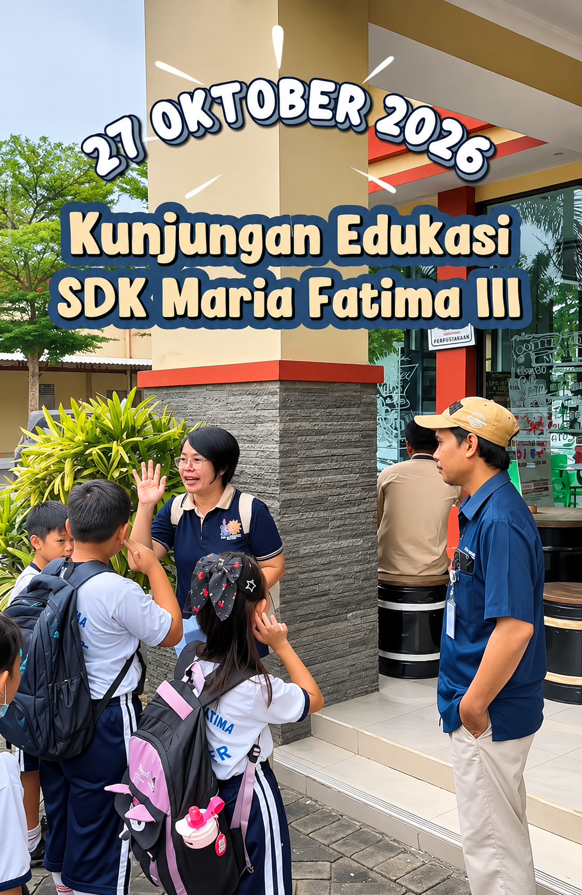
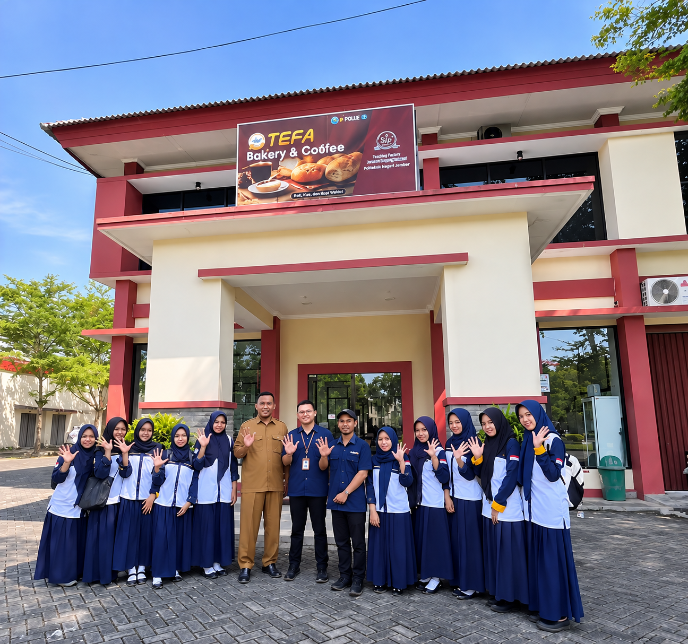
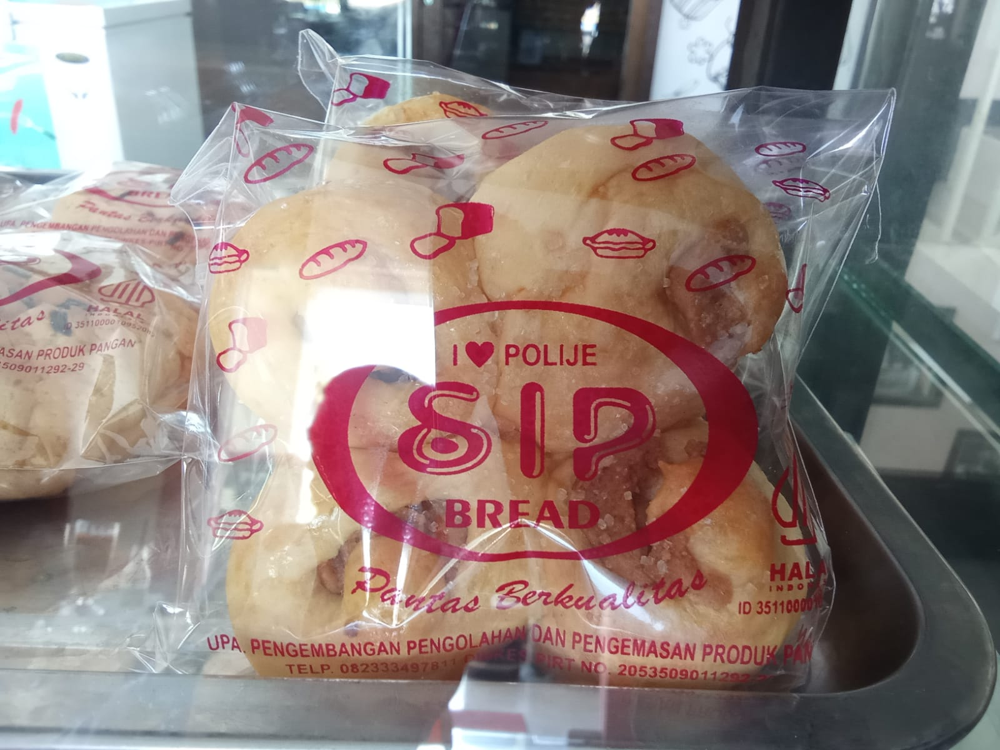
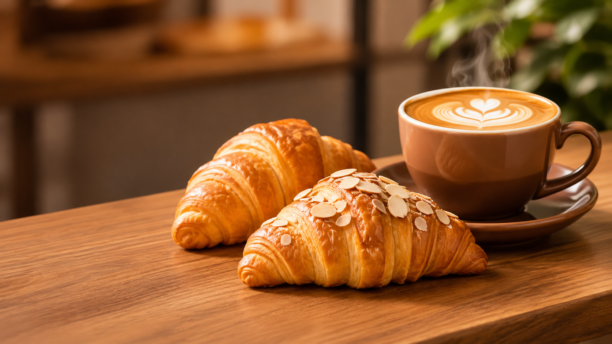

Program Kami
Berbagai program pembelajaran, pengalaman edukasi, serta layanan
usaha
yang dihadirkan oleh TEFA Bakery
Program Kunjungan
Program Kunjungan Edukasi & Outing Class menghadirkan pengalaman belajar langsung di lingkungan Teaching Factory yang terbuka luas bagi sekolah, anak usia dini (TK), pelajar tingkat dasar hingga menengah, komunitas, maupun rombongan kunjungan akademik, di mana para peserta tidak hanya diajak mengenal profil, alur kerja, serta fasilitas produksi unit usaha secara dekat, tetapi juga berkesempatan mengikuti sesi praktik pembuatan roti (hands-on) secara interaktif bersama tim pendamping sehingga kegiatan edukasi berlangsung menyenangkan, aplikatif, dan sesuai dengan jenjang usia maupun kebutuhan masing-masing rombongan.


Program Magang
Program Praktik Vokasi & Magang merupakan wadah pembelajaran terapan berstandar industri bagi mahasiswa Politeknik Negeri Jember maupun peserta magang dan pelatihan untuk merasakan langsung atmosfer kerja profesional dalam operasional harian unit usaha, mulai dari proses produksi roti dan pastry, teknik penyeduhan kopi (barista dan manual brew), penerapan standar kebersihan pangan, hingga pelayanan pelanggan dan manajemen kafe guna membentuk lulusan yang terampil serta siap terjun ke dunia industri.
Peserta diharapkan dapat meningkatkan keterampilan, menambah pengalaman, serta mengembangkan sikap profesional sebagai bekal memasuki dunia kerja.
Program Catering
Melalui layanan Catering & Penjualan Umum, TEFA Bakery and Coffee membuka akses bagi masyarakat umum, civitas akademika Politeknik Negeri Jember, maupun berbagai instansi untuk menikmati produk roti, pastry, dan ragam sajian kopi segar berkualitas hasil produksi unit usaha yang dapat dibeli secara langsung di gerai maupun dipesan dalam bentuk paket konsumsi dan catering guna memenuhi kebutuhan rapat, seminar, pelatihan, perayaan, hingga acara khusus lainnya dengan cita rasa terjaga sekaligus turut mendukung keberlanjutan ekosistem pendidikan vokasi.

Tertarik dengan program kami?
Kami siap membantu! Hubungi kami untuk informasi lebih lanjut mengenai program kunjungan, magang, dan catering.
